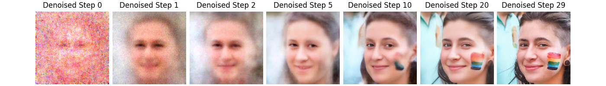

Note
New to DeepInverse? Get started with the basics with the 5 minute quickstart tutorial..
Implementing DiffPIR#
In this tutorial, we revisit the implementation of the DiffPIR diffusion algorithm for image reconstruction from Zhu et al.[1].
The full algorithm is implemented in deepinv.sampling.DiffPIR.
import numpy as np
import torch
import matplotlib.pyplot as plt
from tqdm import tqdm
import deepinv as dinv
from deepinv.utils.plotting import plot
from deepinv.optim.data_fidelity import L2
from deepinv.utils import load_example
Generate an inverse problem#
We first generate a deblurring problem with the butterfly image. We use a square blur kernel of size 5x5 and Gaussian noise with standard deviation 12.75/255.0.
Note
We work with an image of size 64x64 to reduce the computational time of this example. The algorithm works best with images of size 256x256.
device = dinv.utils.get_device()
torch.manual_seed(1)
x_true = load_example("69037.png", img_size=256, device=device)
x = x_true.clone()
mask = torch.ones_like(x)
mask[:, :, 50:100, 50:100] = 0
mask[:, :, 80:130, 50:100] = 0
sigma_noise = 12.75 / 255.0 # noise level
physics = dinv.physics.Inpainting(
mask=mask,
img_size=x.shape[1:],
noise_model=dinv.physics.GaussianNoise(sigma=sigma_noise),
device=device,
)
y = physics(x)
plot(
{
"Measurement": y,
"Ground Truth": x_true,
}
)
Selected GPU 0 with 4991.25 MiB free memory
The DiffPIR algorithm#
Now that the inverse problem is defined, we can apply the DiffPIR algorithm to solve it. The DiffPIR algorithm is a diffusion algorithm that alternates between a denoising step, a proximal step and a reverse diffusion sampling step. The algorithm writes as follows, for \(t\) decreasing from \(T\) to \(1\):
where \(\denoiser{\cdot}{\sigma}\) is a denoising network with noise level \(\sigma\),
\(\mathcal{N}(0, \mathbf{I})\) is a Gaussian noise
with zero mean and unit variance, \(\zeta\) is a parameter that controls the amount of noise added at each
iteration and \(f\) refers to the data fidelity/measurement consistency term,
which for Gaussian Noise (implemented as deepinv.optim.data_fidelity.L2) is given by:
Note that other data fidelity terms can be used, such as deepinv.optim.PoissonLikelihood.
The parameters \((\overline{\alpha}_t)_{0\leq t\leq T}\) and \((\rho_t)_{0\leq t\leq T}\) are
sequences of positive numbers, which we will detail later on.
Let us now implement each step of this algorithm.
Denoising step#
In this section, we show how to use the denoising diffusion model from DiffPIR. The denoising step is implemented by a denoising network conditioned on the noise power. The authors of DiffPIR use a U-Net architecture from Ho et al.[2], which can be loaded as follows:
model = dinv.models.DiffUNet(large_model=False).to(device)
Before being able to use the pretrained model, we need to define the sequence \((\overline{\alpha}_t)_{0\leq t\leq T}\). The following function returns these sequence:
T = 1000 # Number of timesteps used during training
def get_alphas(beta_start=0.1 / 1000, beta_end=20 / 1000, num_train_timesteps=T):
betas = np.linspace(beta_start, beta_end, num_train_timesteps, dtype=np.float32)
betas = torch.from_numpy(betas).to(device)
alphas = 1.0 - betas
alphas_cumprod = np.cumprod(alphas.cpu(), axis=0) # This is \overline{\alpha}_t
return torch.tensor(alphas_cumprod)
alphas_cumprod = get_alphas()
/local/jtachell/deepinv/deepinv/examples/sampling/demo_diffpir.py:119: UserWarning: To copy construct from a tensor, it is recommended to use sourceTensor.detach().clone() or sourceTensor.detach().clone().requires_grad_(True), rather than torch.tensor(sourceTensor).
return torch.tensor(alphas_cumprod)
Now that we have the sequence of interest, there remains to link noise power to the timestep. The following function returns the timestep corresponding to a given noise power, which is given by
sigmas = torch.sqrt(1.0 - alphas_cumprod) / alphas_cumprod.sqrt()
def find_nearest(array, value):
array = np.asarray(array)
idx = (np.abs(array - value)).argmin()
return idx
t = 100 # choose arbitrary timestep
# We can now apply the model to a noisy image. We first generate a noisy image
x_noisy = x_true + torch.randn_like(x_true) * sigmas[t]
den = model(x_noisy, sigmas[t])
plot(
{
"Noisy Input": x_noisy,
"Denoised Image": den,
"Error": den - x_true,
}
)
Data fidelity step#
The data fidelity step is easily implemented in this library. We simply need to define a data fidelity function and use its prox attribute. For instance:
data_fidelity = L2()
# In order to take a meaningful data fidelity step, it is best if we apply it to denoised measurements.
# First, denoise the measurements. To do so, we need to estimate the timestep associated with the noise level of the
# measurements. This is done as follows:
t_temp = find_nearest(sigmas.cpu().numpy(), sigma_noise * 2)
y_denoised = model(y, sigmas[t_temp] / 2.0)
# Next, apply the proximity operator of the data fidelity term (this is the data fidelity step). In the algorithm,
# the regularization parameter is carefully chosen. Here, for simplicity, we set it to :math:`1/\sigma`.
x_prox = data_fidelity.prox(y_denoised, y, physics, gamma=(1 / sigmas[t]).to(device))
plot(
{
"Measurement": y,
"Denoised Measurement": y_denoised,
"Data Fidelity Step": x_prox,
},
tight=False,
)
Sampling step#
The last step to be implemented is the DiffPIR sampling step and this can be computed in two steps. Firstly, we need to compute the effective noise in the estimated reconstruction, i.e. the residual between the previous reconstruction and the data fidelity step. This is done as follows:
Note
The diffPIR algorithm assumes that the images are in the range [-1, 1], whereas standard denoisers usually output images in the range [0, 1]. This is why we rescale the images before applying the steps.
x_prox_scaled = 2 * x_prox - 1 # Rescale the output of the proximal step in [-1, 1]
y_scaled = 2 * y - 1 # Rescale the measurement in [-1, 1]
t_i = find_nearest(
sigmas.cpu().numpy(), sigma_noise * 2
) # time step associated with the noise level sigma
eps = (y_scaled - alphas_cumprod[t_i].sqrt() * x_prox_scaled) / torch.sqrt(
1.0 - alphas_cumprod[t_i]
) # effective noise
# (notice the rescaling)
#
Secondly, we need to perform the sampling step, which is a linear combination between the estimated noise and the realizations of a Gaussian white noise. This is done as follows:
zeta = 0.3
x_sampled_scaled = alphas_cumprod[t_i - 1].sqrt() * x_prox_scaled + torch.sqrt(
1.0 - alphas_cumprod[t_i - 1]
) * (np.sqrt(1 - zeta) * eps + np.sqrt(zeta) * torch.randn_like(x))
x_sampled = (x_sampled_scaled + 1) / 2 # Rescale the output in [0, 1]
imgs = {
"Measurement": y,
"Denoised Measurement": y_denoised,
"Data Fidelity Step": x_prox,
"Sampling Step": x_sampled,
}
plot(imgs, tight=False)
(notice that noise has been added everywhere in the image, including in the masked region)
Setting the noise and regularization schedules#
The only remaining step is to set the noise schedule (i.e. the sequence of noise powers and regularization parameters) appropriately. This is done with the following function:
Note
We only use 30 steps to reduce the computational time of this example. As suggested by the authors of DiffPIR, the
algorithm works best with diffusion_steps = 100.
max_iter = 30 # maximum number of iterations of the DiffPIR algorithm
# Useful sequences for the algorithm
sqrt_1m_alphas_cumprod = torch.sqrt(1.0 - alphas_cumprod)
sqrt_alphas_cumprod = torch.sqrt(alphas_cumprod)
reduced_alpha_cumprod = torch.div(
sqrt_1m_alphas_cumprod, sqrt_alphas_cumprod
) # equivalent noise sigma on image
sqrt_recip_alphas_cumprod = torch.sqrt(1.0 / alphas_cumprod)
# noise schedule of the algorithm
def get_noise_schedule(sigma, lambda_=7.0, num_train_timesteps=1000, max_iter=max_iter):
sigmas = []
sigma_ks = []
rhos = []
for i in range(num_train_timesteps):
sigmas.append(reduced_alpha_cumprod[num_train_timesteps - 1 - i])
sigma_ks.append((sqrt_1m_alphas_cumprod[i] / sqrt_alphas_cumprod[i]))
rhos.append(lambda_ * (sigma**2) / (sigma_ks[i] ** 2))
rhos, sigmas = torch.tensor(rhos).to(device), torch.tensor(sigmas).to(device)
seq = np.sqrt(np.linspace(0, num_train_timesteps**2, max_iter))
seq = [int(s) for s in list(seq)]
seq[-1] = seq[-1] - 1
return rhos, sigmas, seq
rhos, sigmas, seq = get_noise_schedule(sigma_noise)
# Plot the noise and regularization schedules
plt.figure(figsize=(6, 3))
plt.rcParams.update({"font.size": 9})
plt.subplot(121)
plt.plot(
2 / rhos.cpu().numpy()[::-1]
) # Note that the regularization parameter is 2/rho and not rho
plt.xlabel(r"$t$")
plt.ylabel(r"$\rho$")
plt.subplot(122)
plt.plot(sigmas.cpu().numpy()[::-1])
plt.xlabel(r"$t$")
plt.ylabel(r"$\sigma$")
plt.suptitle("Regularisation parameter and noise schedules (fully sampled)")
plt.tight_layout()
plt.show()
In the algorithm, we will only use sub-sampled versions of the noise and regularization schedules. Let’s visualize those.
list_sigmas_algo = [sigmas[seq[i]].cpu().item() for i in range(max_iter)]
list_rhos_algo = [rhos[seq[i]].cpu().item() for i in range(max_iter)]
plt.figure(figsize=(6, 3))
plt.subplot(121)
plt.plot(
2 / torch.tensor(list_rhos_algo).cpu().numpy()
) # Note that the regularization parameter is 2/rho and not rho
plt.xlabel(r"$t$")
plt.ylabel(r"$\rho$")
plt.subplot(122)
plt.plot(list_sigmas_algo)
plt.xlabel(r"$t$")
plt.ylabel(r"$\sigma$")
plt.suptitle(f"Regularisation parameter and noise schedules (for {max_iter} steps)")
plt.tight_layout()
plt.show()
Putting it all together: the DiffPIR algorithm#
We can now put all the steps together and implement the DiffPIR algorithm! First, we initialize the algorithm, and then we iterate over the different steps detailed above.
# Initialization
x = 2 * physics.A_adjoint(y) - 1 # Rescale
x = (
x + (sigmas[seq[0]] ** 2 - 4 * sigma_noise**2).sqrt() * torch.randn_like(x)
) / sqrt_recip_alphas_cumprod[
-1
] # Add noise (simpler than the original code, may be suboptimal)
# Images to save for visualization
list_denoised, list_prox, list_noisy = [], [], []
save_steps = [0, 1, 2, 5, 10, 20, 29]
with torch.no_grad():
for i in tqdm(range(len(seq))):
sigma_cur = sigmas[seq[i]]
# time step associated with the noise level sigmas[i]
t_i = find_nearest(reduced_alpha_cumprod, sigma_cur.cpu().numpy())
at = 1 / sqrt_recip_alphas_cumprod[t_i] ** 2
# Denoising step
x_aux = x / (2 * at.sqrt()) + 0.5 # renormalize in [0, 1]
out = model(x_aux, sigma_cur / 2)
denoised = 2 * out - 1 # back to [-1, 1]
x0 = denoised.clamp(-1, 1) # optional
if not seq[i] == seq[-1]:
# 2. Data fidelity step
x0 = data_fidelity.prox(x0, y, physics, gamma=1 / (2 * rhos[t_i]))
# 3. Sampling step
next_sigma = sigmas[T - 1 - seq[i + 1]].cpu().numpy()
t_im1 = find_nearest(
sigmas.cpu().numpy(), next_sigma
) # time step associated with the next noise level
eps = (x - alphas_cumprod[t_i].sqrt() * x0) / torch.sqrt(
1.0 - alphas_cumprod[t_i]
) # effective noise
x = alphas_cumprod[t_im1].sqrt() * x0 + torch.sqrt(
1.0 - alphas_cumprod[t_im1]
) * (np.sqrt(1 - zeta) * eps + np.sqrt(zeta) * torch.randn_like(x))
if i in save_steps:
list_noisy.append(x_aux)
list_denoised.append(denoised)
list_prox.append(x0)
# Renormalize in [0, 1]
x = (x + 1) / 2
# Plotting the results
plot(
{
"Measurement": y,
"Model Output": x,
"Ground Truth": x_true,
}
)
0%| | 0/30 [00:00<?, ?it/s]
10%|█ | 3/30 [00:00<00:01, 22.68it/s]
20%|██ | 6/30 [00:00<00:01, 22.17it/s]
30%|███ | 9/30 [00:00<00:00, 21.92it/s]
40%|████ | 12/30 [00:00<00:00, 22.38it/s]
50%|█████ | 15/30 [00:00<00:00, 22.65it/s]
60%|██████ | 18/30 [00:00<00:00, 22.83it/s]
70%|███████ | 21/30 [00:00<00:00, 22.92it/s]
80%|████████ | 24/30 [00:01<00:00, 22.99it/s]
90%|█████████ | 27/30 [00:01<00:00, 23.02it/s]
100%|██████████| 30/30 [00:01<00:00, 24.62it/s]
100%|██████████| 30/30 [00:01<00:00, 23.26it/s]
Let’s visualize the sample, its denoised version and the proximal steps at different iterations.
# sphinx_gallery_thumbnail_number = 9
# sphinx_gallery_multi_image = "single"
plot(
list_noisy,
titles=[f"Noisy Sample Step {i}" for i in save_steps],
dpi=1500,
tight=False,
)
plot(
list_denoised,
titles=[f"Denoised Step {i}" for i in save_steps],
dpi=1500,
)
plot(
list_prox,
titles=[f"Proximal Step {i}" for i in save_steps],
dpi=1500,
)
- 

Using the DiffPIR algorithm in your inverse problem#
You can readily use this algorithm via the deepinv.sampling.DiffPIR class.
y = physics(x)
model = dinv.sampling.DiffPIR(dinv.models.DiffUNet(), data_fidelity=dinv.optim.data_fidelity.L2())
xhat = model(y, physics)
- References:
Total running time of the script: (0 minutes 32.801 seconds)